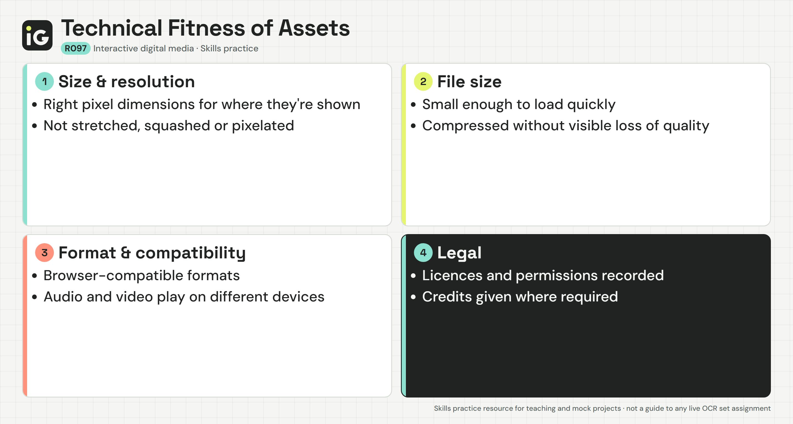
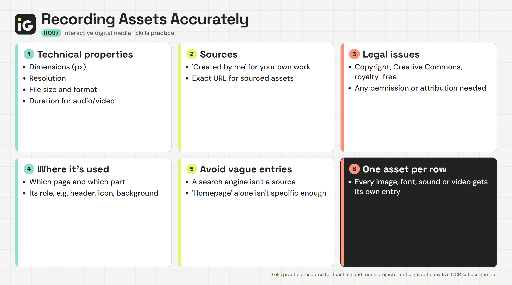

Skills practice resource. These guides support teaching and mock projects. They are not a guide to any live OCR set assignment. During your assessed NEA, follow only your teacher's instructions and the OCR set assignment.

Technical fitness of assets
Test/check and explain if repurposed asset properties are fit for purpose.
Technical properties
Fit for purpose
Explain trade-offs
Be honest:
If something is not fit for purpose, say so — and explain exactly how you would fix it.
Download the OCR asset table template (unmodified)
Download the blank OCR asset table template and record all of the assets you have used.
Open the asset table template
Technical points to evaluate
- File size vs quality (is it compressed enough without looking awful?).
- Dimensions (are images the right size for where they appear?).
- Format choice (SVG/PNG/JPG/WebP) and why it suits that asset.
- Consistency across the site (same icon size, same banner size).
Key facts
- JPG compression reduces file size.
- SVG stays sharp when scaled.
Watch: Understanding Asset Technical Fitness
This video explains how to check file size, dimensions, formats and why these choices affect how well your assets perform in a website.
Watch: Completing the asset table (sources + legal constraints)
Use this video to help you complete your asset table accurately, including technical properties, source details, licensing/copyright and exactly where each asset is used in your IDMP.

Asset table guidance slides (PDF)
Open the slides below (or download them) and use them as a checklist for what to include in each column of your asset table.
Download: